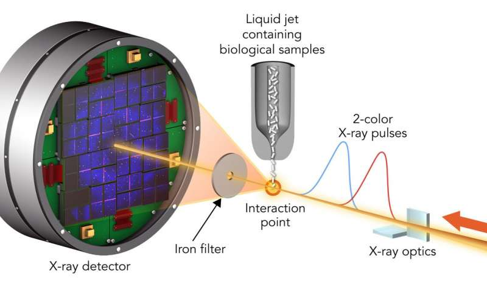

Testing how accurately X-ray lasers can measure the inner workings of biological molecules
One of the great advantages of X-ray free-electron lasers like the one at the Department of Energy's SLAC National Accelerator Laboratory is that they allow researchers to determine the structure of biological molecules in natural environments. This is important if you want to study how a potential new drug interacts with a virus in conditions similar to those found in the human body. By hitting these samples with ultrashort X-ray laser pulses, scientists can collect data in the instant before damage from the X-rays has time to propagate through the sample. But is there really zero damage to samples examined by this method, which is known as "diffraction before destruction"? Knowing the answer at finer and finer scales of measurement is important for analyzing the results of these experiments and understanding how biological molecules do their work. Such understanding is critical in designing drugs to effectively target specific diseases. Thanks to a two-color X-ray laser technique developed at SLAC's Linac Coherent Light Source (LCLS), an experiment at LCLS is testing this technique to limits never before seen. A team led by Ilme Schlichting of the Max Planck Institute for Medical Research and Sébastien Boutet of SLAC hit two types of crystallized biological molecules with pairs of X-ray laser pulses that had slightly different wavelengths and were up to 100 femtoseconds, millionths of a billionth of a second, apart. The first pulse passed through the sample and was absorbed by a foil filter. The second one scattered off the sample, passed through the filter and entered a detector, forming patterns that could be analyzed to recreate the structure of the sample's molecules and measure any changes caused by the first pulse.
With this method, the team found that the parts of a molecule that contain atoms heavier than oxygen absorbed the brunt of the X-ray damage. Chains of carbon atoms, which form the backbone of all proteins, also saw changes over time, but to a much smaller degree. These changes were not consistent throughout the entire molecule, occurring more in certain areas than in others, and they increased as the time between pulses was increased. These results show that in order to make reliable measurements, researchers need to model these specific parts of a sample rather than assuming all parts of the molecule are equally damaged. This study, published in Nature Communications, is the beginning of a fuller understanding of how very short X-ray pulses produced by X-ray lasers like LCLS modify the structure of biological molecules. The team concluded that "diffraction before destruction" is an effective method of determining the structure of biological molecules, so long as scientists consider the intensity and duration of the pulses used to study them when interpreting their results. Such knowledge can be applied across the wide range of studies being undertaken at these facilities, which range from investigating new ways of combating mosquito-borne diseases to studying the virulence of deadly pathogens and developing a better understanding of anti-asthmatic drugs.